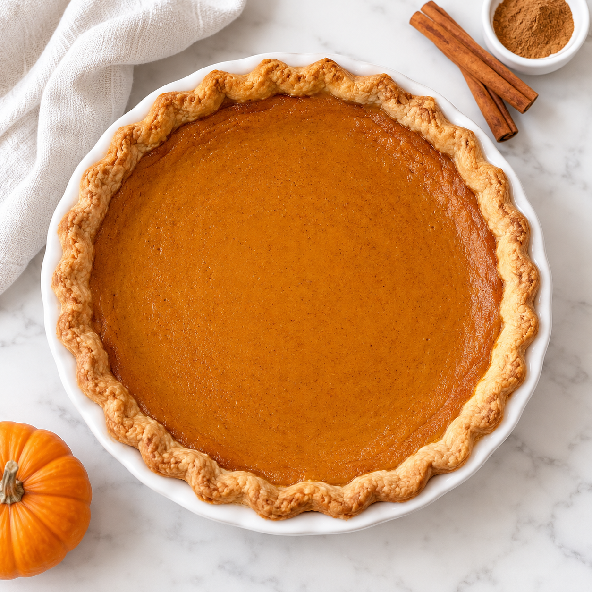

Pumpkin pie has a reputation problem in diabetes conversations, and most of it is undeserved. Pumpkin itself is a low-carb vegetable with a useful amount of fiber. The trouble is everything the classic recipe adds around it: sweetened condensed milk, a cup or more of white sugar, and a wheat pastry crust. Take those three things out and the dessert changes character completely.
This version holds the custard together with eggs, cream, and warm spice, the way a good pumpkin pie should. The crust is pressed into the dish rather than rolled, so there is no chilling, no flour cloud across the counter, and no cracked dough to patch. It bakes to a deep gold, tastes faintly of toasted almonds, and slices cleanly straight from the refrigerator.
Almond flour brings fat and fiber into the crust, which slows digestion of the slice as a whole. Erythritol and monk fruit pass through the body without raising blood glucose, and the eggs and cream give the custard a protein backbone. A slice still carries carbohydrate from the pumpkin, nuts, and dairy, so treat it as part of a planned meal rather than a free food.
Ingredients
One 9-inch pie — 8 generous slices
For the Almond Crust
- Almond flour, finely ground 1¼ cups
- Unsalted butter, melted 2 tbsp
- Large egg 1
- Erythritol or monk fruit sweetener 1 tbsp
- Fine sea salt ¼ tsp
For the Pumpkin Filling
- Unsweetened pumpkin puree (100% pumpkin) 1¾ cups
- Large eggs 2
- Heavy cream ½ cup
- Unsweetened milk (almond or dairy) ¼ cup
- Powdered erythritol or monk fruit, to taste ⅓ cup
- Pure vanilla extract 1 tsp
- Ground cinnamon 1½ tsp
- Ground ginger ½ tsp
- Ground nutmeg ¼ tsp
- Fine sea salt A pinch
Preparation Method
Hands-on time: 15 minutes • Oven: 50–60 minutes • Chill: at least 3 hours
01 Make the crust
- Preheat: Heat the oven to 175°C (350°F) and set a rack in the middle position.
- Mix the crust: In a bowl, stir together the almond flour, melted butter, egg, sweetener, and salt until the mixture holds together when pressed. It should feel like soft, slightly sticky sand.
- Press it in: Tip the mixture into a 9-inch pie dish. Press it evenly across the base and up the sides with your fingers, keeping the thickness as uniform as you can.
- Blind bake: Bake the empty crust for 10–12 minutes, until the edges are lightly golden and the centre looks dry.
- Cool briefly: Set the dish on a wire rack while you make the filling. Leave the oven on.
02 Prepare the filling
- Whisk pumpkin and eggs: In a large bowl, whisk the pumpkin puree and eggs until completely smooth.
- Add the dairy: Pour in the cream, milk, and powdered sweetener, then whisk again.
- Season: Add the vanilla, cinnamon, ginger, nutmeg, and salt.
- Finish smooth: Whisk for another 30 seconds, scraping the sides of the bowl, until the custard is even in colour with no streaks of egg.
03 Bake the pie
- Fill: Pour the custard into the prepared crust, right up to the crimped edge.
- Bake: Bake at 175°C (350°F) for 40–50 minutes. With the blind bake, the pie spends roughly 50–60 minutes in the oven in total.
- Check the set: The edges should look set and slightly puffed, while the centre still wobbles gently when you nudge the dish. A knife inserted an inch from the edge should come out clean.
- Cool: Leave the pie at room temperature until completely cool. This is when the custard finishes setting.
- Chill: Refrigerate for at least 3 hours before slicing. Overnight is better.
Don't overbake it. Pumpkin pie should have a soft, creamy custard centre, not a dry, cake-like texture. If the middle still jiggles like set jelly when you take it out, it is ready. Kitchen note
A Few Diabetes-Conscious Tips
Small details that make a measurable difference